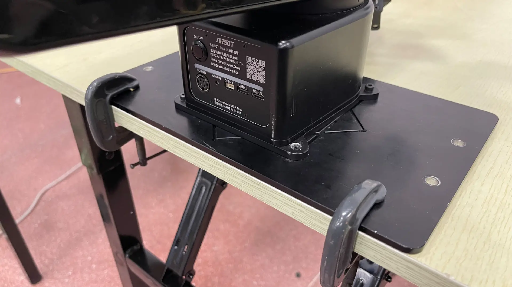
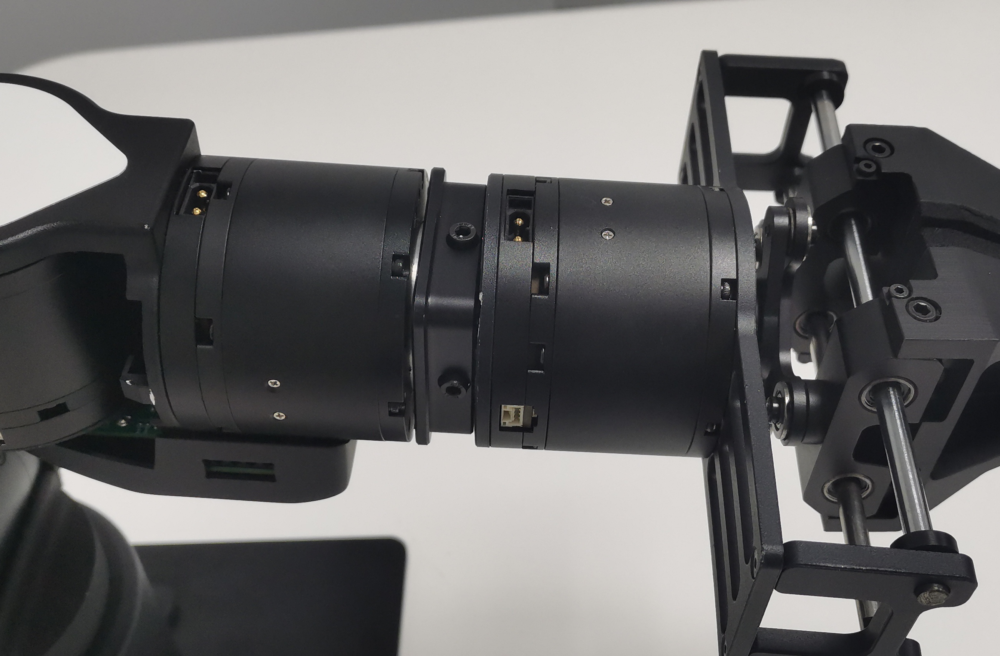

机械臂安装说明
1. 单臂安装
1.1 安装并固定底板
-
安装底板
取出臂、底板、m4螺丝*4、L型M4扳手，根据场景按需要的角度（正安装 / 斜 45 度安装）将臂固定在底板上，如下图所示：

图2.1 底板 图2.2 正安装方式 
图2.3 斜45度安装方式 -
固定底版
在使用机械臂之前，需要将底板固定在稳固的底座上。
随机械臂附带的 C 型夹固定方式可用于将底板固定在桌沿，如下图所示：

图2.4 底板C型夹固定方式 底板也可通过两侧的 M5 通孔 * 4 安装固定在需要的设备上，孔位与尺寸如下图所示：

图2.5 底板孔位尺寸图
注意：
安装后必须确定机械臂处于开阔空间，以防机械臂在运动时碰撞到周围的人或物品。
1.2 安装末端连接件
取出末端连接件、M3 螺丝 * 3、L 型扳手如下图：
将末端连接件三个固定销与末端电机安装并用 M3 螺丝 * 3 固定，如下图：
-

图2.7 末端连接件固定销*3位置图 -

图2.8 末端连接件固定完成图
2. 安装夹爪或示教器 【选配套件】
-
安装夹爪
取出夹爪、M4螺丝 * 4，如下为夹爪与连接件固定位，将该放入末端连接件中，固定安装。

图2.9 夹爪电机连接固定位置图 
图2.10 夹爪螺丝位置图 取出夹爪配套的连接线
图2.11 夹爪连接线 找到如下图所示电源插口安装，
注意：
避免强行拉拽线，造成接触不良，安装或取下时拔插两个端口处。

图2.12 夹爪安装插口图 
图2.13 夹爪安装实物图 -
安装示教器
取出示教器、M4螺丝*4，如下为示教器与连接件固定位，将该放入末端连接件中，固定安装。
图2.14 示教器电机连接固定位置图 
图2.15 示教器螺丝位置图 取出示教器配套的连接线
图2.16 示教器连接线 找到如下图所示电源插口安装
注意：
避免强行拉拽线，造成接触不良，安装或取下时拔插两个端口处。
图2.17 示教器安装插口图 
图2.18 示教器安装实物图
3. 底座面板
-

图3.1 机械臂面板 -
- 红框部分是开机键，长按3s左右待指示灯条黄色灯珠依次全部亮起，等待黄灯全亮变成白灯全亮后完成开机
- 红框部分是关机键，长按3s左右待指示灯条黄色灯珠依次全部熄灭，完成关机
- 绿框部分是电源接口
- 蓝框部分是通信接口
USB
USB-1 (TypeC) 接口用于连接相机，用于视觉传感器数据传输。
USB-2 (TypeC) 接口用于连接上位机，用于数据传输和控制。
4. 开机与标零
4.1 准备电脑
在 Ubuntu 20.04 系统安装最新的机械臂软件包，并配置好环境，安装 airbot_play 与 airbot_tools 两个软件包，安装方式请参考软件环境配置。
4.2 标零
请参考标零说明文档进行标零操作。
5. 键盘控制
完成标零操作后，运行键盘控制工具，机械臂进入受控状态：
在该状态下：
- 点按键盘
W/A/S/D/Q/E控制机械臂前后左右上下移动 - 点按键盘
1-0控制单个关节顺逆时针旋转 [与]控制夹爪开合- 长按末端按键进入重力补偿模式。在该模式下机械臂可被自由拖动；在该模式下短按底座按键开始 / 停止录制动作
- 双击末端按键进入重放待机模式。在该模式下，短按底座按键开始重放动作
Ctrl+C或Z退出程序
其他控制工具详见软件工具使用说明。